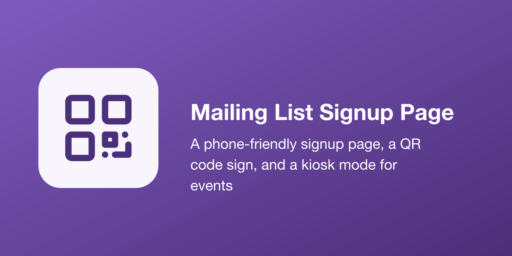

Give a public mailing list its own simple signup page. Print a sign with its QR code for a table at an event, or put the QR code on your business cards.
Kiosk mode lets people sign up one after another on your own phone or tablet.
A title, a short introduction, a name and an email field, and one big button.
Download the QR code, or print a sign with it from the mailing list.
Each signup is forgotten as soon as it is done, and earlier addresses are never suggested to the next person.
New signups get the list's welcome email from Mailing List Welcome, once per address.
This module is free. Help installing, setting up or using it is available from Meskis Works with a support contract: sales@meskis.net.